Autumn은 코드가 아니라 계획을 중심에 둔 Windows용 IDE입니다. 노드 하나가 기능이나 작업, 모듈, 화면 같은 프로그램의 한 부분이고, 노드 본문에는 그 부분을 만들 AI에게 줄 지시를 적습니다. 파일 경로나 함수 형태, 데이터 구조처럼 꼭 지켜야 할 내용은 노드의 스펙 칸에 따로 적습니다.
기획이 끝나면 Claude Code, Codex CLI, Gemini CLI 같은 AI 코딩 도구를 MCP로 연결합니다. AI는 Autumn이 정리한 빌드 계획을 받아 순서대로 코드를 쓰고, 끝낸 노드를 완료로 바꿉니다. 그 변화는 캔버스에 바로 보입니다.
모든 데이터는 내 컴퓨터에만 있습니다. 서버나 계정이 없고, Autumn은 API 키를 저장하지 않습니다. AI 도구는 원래 쓰던 로그인을 그대로 씁니다. 프로젝트는 WorkFlow 폴더에 JSON 파일로 저장되므로 백업하기도 쉽습니다.
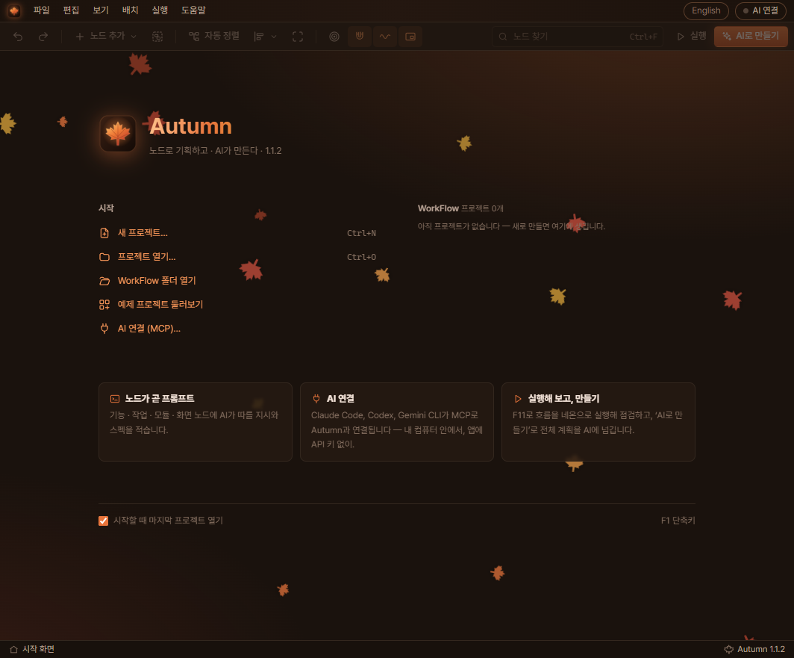
GitHub에서 받은 Autumn.exe는 파일 하나로 된 프로그램입니다. 받은 파일을 실행하면 됩니다. 처음 실행할 때만 %LOCALAPPDATA%\Autumn에 프로그램을 푸느라 몇 초 걸리고, 그다음부터는 바로 켜집니다. 이때 프로젝트는 문서\Autumn\WorkFlow에 저장됩니다.
Autumn\ Autumn.exe Autumn 실행 Autumn 사용설명서.pdf 이 설명서 WorkFlow\ 내 프로젝트(*.autumn.json), 다시 빌드해도 그대로 유지 app\ 실행 환경(Electron) Source\ 소스 코드
Node.js 18 이상이 필요합니다. Source 폴더의 Build.bat을 실행하면 바탕 화면에 Autumn 폴더가 만들어지고, 이미 있으면 새 버전으로 바뀝니다. WorkFlow 폴더는 건드리지 않습니다.
처음 빌드할 때만 Electron과 빌드 도구를 %LOCALAPPDATA%\Autumn-build에 내려받습니다. 한국어로 시작하는 빌드는 node scripts/build.js --lang=ko로 만들고, 다른 폴더에 만들려면 --out=D:\Apps\Autumn처럼 위치를 지정합니다.
오른쪽 위의 English / 한국어 버튼이나 보기 메뉴의 언어에서 바꿉니다. 창이 한 번 다시 열리면서 바뀌고, 다음에 실행할 때도 그대로 유지됩니다.
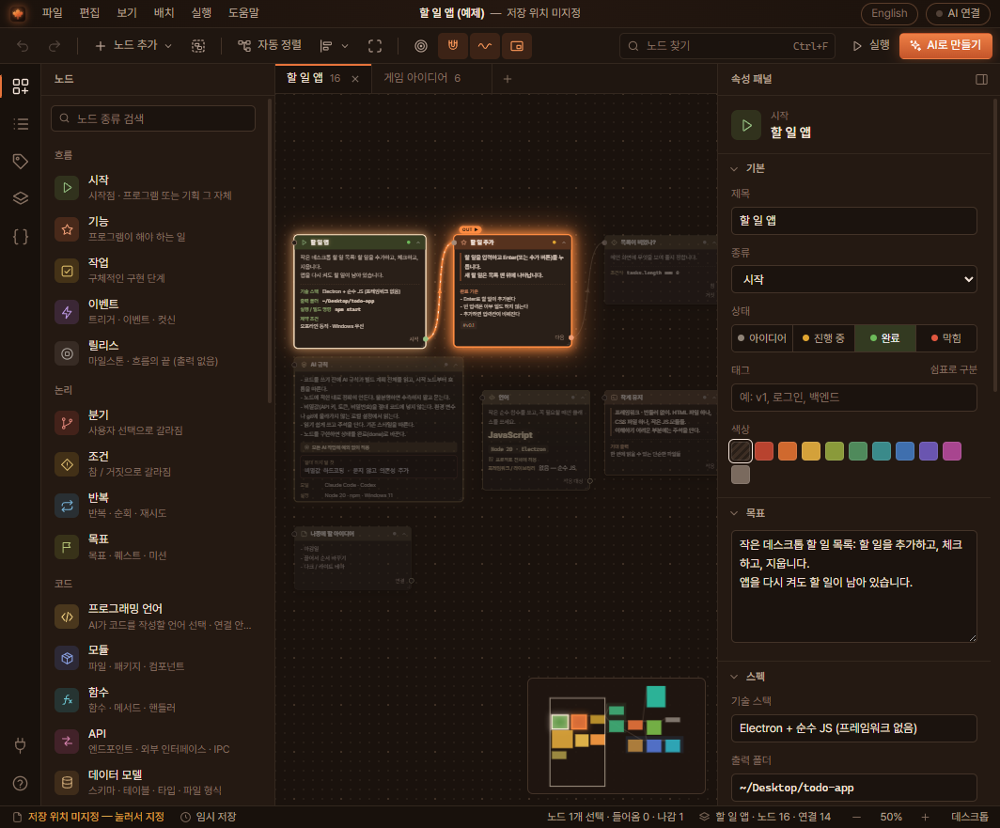
| 영역 | 하는 일 |
|---|---|
| 메뉴 | 파일, 편집, 보기, 배치, 실행, 도움말. 오른쪽 끝에 언어 버튼과 AI 연결 버튼이 있습니다. |
| 툴바 | 실행 취소, 노드 추가, 그룹, 자동 정렬과 맞춤, 흐름 추적, 격자 맞춤, 연결 애니메이션, 미니맵, 노드 찾기, 실행, AI로 만들기 |
| 왼쪽 패널 | 노드 종류 목록(끌어다 놓기), 개요, 태그, 레이어, 데이터 템플릿 |
| 캔버스 | 노드와 연결을 그리는 곳입니다. 마우스 휠로 확대·축소하고, 빈 곳을 끌거나 Space를 누른 채 끌어서 이동합니다. |
| 속성 패널 | 선택한 노드의 제목, 종류, 상태, 태그, 색, 프롬프트, 스펙, 결과, 연결, 이미지, 데이터 |
| 미니맵, 상태 표시줄 | 보드 전체에서 지금 보는 위치, 저장 상태, 선택한 노드 수, 노드와 연결 수, 확대 비율 |
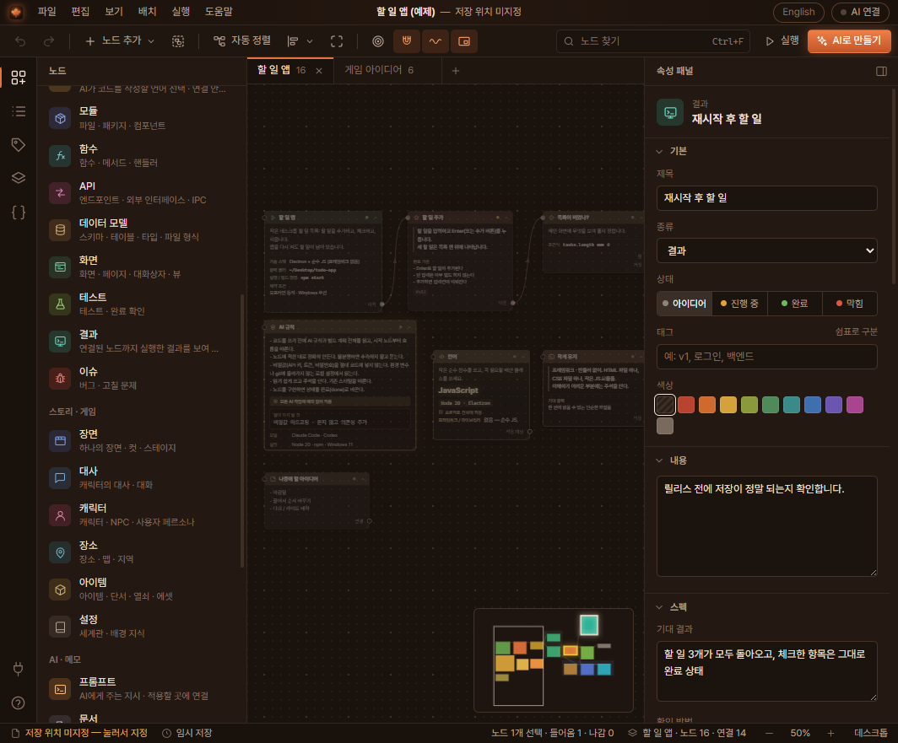
이름.autumn.json 파일이 생깁니다. "시작 노드와 기본 AI 규칙을 넣어서 시작"을 켜 두면 두 노드가 미리 들어갑니다.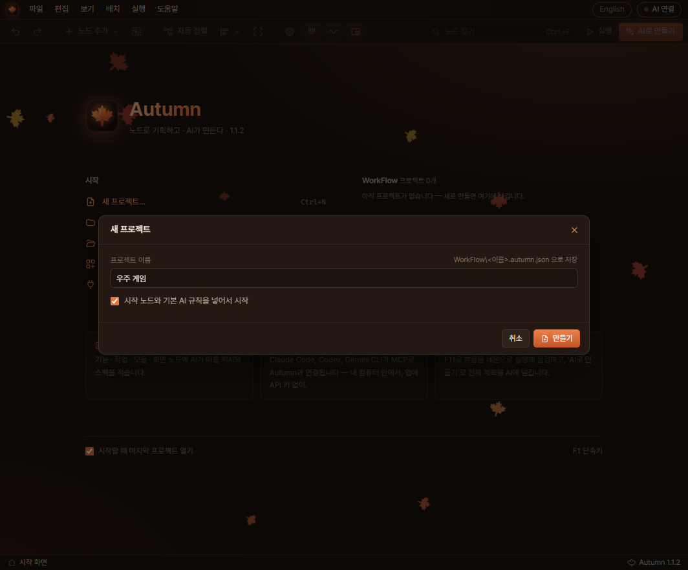
| 이름 | 종류 | 쓰임 |
|---|---|---|
| 흐름 | ||
| 시작 | start | 시작점 · 프로그램 또는 기획 그 자체 |
| 기능 | feature | 프로그램이 해야 하는 일 |
| 작업 | task | 구체적인 구현 단계 |
| 이벤트 | event | 트리거 · 이벤트 · 컷신 |
| 릴리스 | ending | 마일스톤 · 흐름의 끝 (출력 없음) |
| 논리 | ||
| 분기 | choice | 사용자 선택으로 갈라짐 |
| 조건 | condition | 참 / 거짓으로 갈라짐 |
| 반복 | loop | 반복 · 순회 · 재시도 |
| 목표 | quest | 목표 · 퀘스트 · 미션 |
| 코드 | ||
| 프로그래밍 언어 | lang | AI가 코드를 작성할 언어 선택 · 연결 안 함 = 프로젝트 전체 |
| 모듈 | module | 파일 · 패키지 · 컴포넌트 |
| 함수 | function | 함수 · 메서드 · 핸들러 |
| API | api | 엔드포인트 · 외부 인터페이스 · IPC |
| 데이터 모델 | data | 스키마 · 테이블 · 타입 · 파일 형식 |
| 화면 | ui | 화면 · 페이지 · 대화상자 · 뷰 |
| 테스트 | test | 테스트 · 완료 확인 |
| 결과 | result | 연결된 노드까지 실행한 결과를 보여 줌 · AI가 채움 |
| 이슈 | bug | 버그 · 고칠 문제 |
| 스토리 · 게임 | ||
| 장면 | scene | 하나의 장면 · 컷 · 스테이지 |
| 대사 | dialogue | 캐릭터의 대사 · 대화 |
| 캐릭터 | character | 캐릭터 · NPC · 사용자 페르소나 |
| 장소 | location | 장소 · 맵 · 지역 |
| 아이템 | item | 아이템 · 단서 · 열쇠 · 에셋 |
| 설정 | lore | 세계관 · 배경 지식 |
| AI · 메모 | ||
| 프롬프트 | prompt | AI에게 주는 지시 · 적용할 곳에 연결 |
| 문서 | doc | 스펙 · 요구사항 · 참고 파일이나 URL |
| 메모 | note | 사람이 보는 자유 메모 |
| AI 노트 | ainote | 모델 · 프롬프트 · 설정 · 참고 자료 기록 |
| AI 규칙 | aiguide | 모든 AI가 모든 작업에서 반드시 따르는 규칙 |
| 이름 | 종류 | 뜻 |
|---|---|---|
| 흐름 | flow | 다음 단계로 이어짐 |
| 유발 | cause | 원인 → 결과 · 계기 |
| 필요 | require | 먼저 있어야 / 끝나야 함 (의존) |
| 사용 | uses | 호출 · 가져오기 · 읽기/쓰기 |
| 관계 | relation | 요소 사이의 관계 |
| 대립 | conflict | 적대 · 갈등 |
| 참조 | ref | 메모 · 문서 참고 |
| AI 참고 | ai | AI용 프롬프트 · AI 노트 · 규칙 (어디에나 연결) |
아이디어 진행 중 완료 막힘
노드 오른쪽 위의 작은 점이 상태를 나타냅니다. AI는 구현을 마친 노드를 MCP로 완료로 바꿉니다.
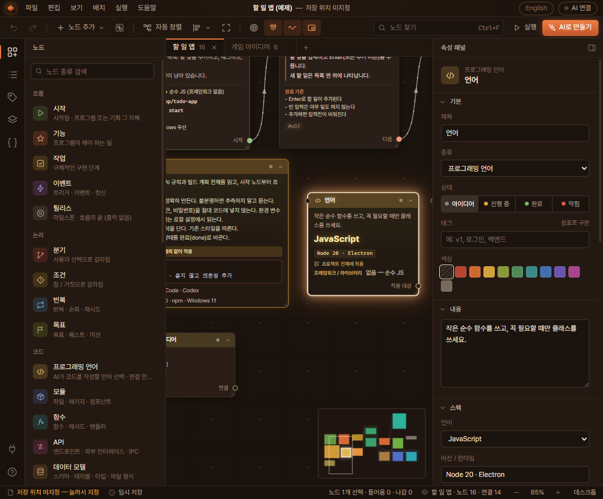
AI가 어떤 언어로 코드를 쓸지 정하는 노드입니다. 속성 패널의 목록에서 언어를 고르고, 필요하면 버전과 프레임워크, 코드 스타일을 적습니다. 고를 수 있는 언어는 JavaScript, TypeScript, Python, C#, C++, C, Java, Kotlin, Go, Rust, Swift, Dart, PHP, Ruby, Lua, GDScript, HTML / CSS, SQL, PowerShell, Bash, 기타입니다.
아무 데도 연결하지 않으면 프로젝트 전체에 적용되고, 빌드 계획의 프로젝트 설정에 들어갑니다. 특정 노드나 그룹에 연결하면 그 부분에만 적용됩니다. 서버는 Python, 화면은 TypeScript처럼 나눠 쓸 수 있습니다.
결과 노드는 중간 점검용 노드입니다. 확인하고 싶은 단계를 결과 노드로 연결해 두면, 그 단계까지 실행했을 때 무엇이 나오는지 AI가 판단해서 채워 줍니다.
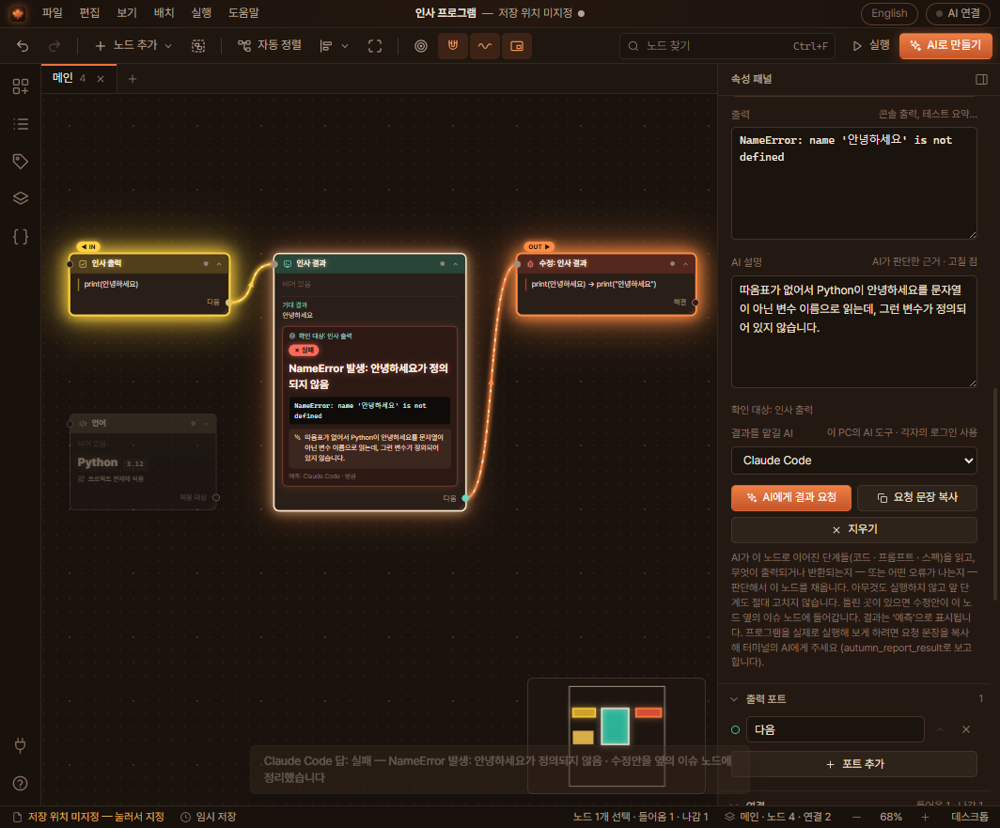
npm test)도 적어 두면 좋습니다.답이 오면 결과 노드에 상태와 한 줄 요약, 출력, AI 설명이 채워집니다. 상태는 ✓ 통과 ✗ 실패 ▸ 출력 ≈ 예측 중 하나입니다. AI는 코드를 실제로 실행하지 않고 읽어서 판단하기 때문에, 이렇게 받은 결과에는 '예측'이라고 표시됩니다. 내용은 직접 고쳐 적어도 됩니다.
AI는 결과 노드 앞의 단계를 고치지 않습니다. 결과가 틀리면 결과 노드 바로 옆에 이슈 노드를 만들어 연결하고, 고칠 점만 한 줄씩 적습니다.
print(안녕하세요) → print("안녕하세요")
단계를 고친 뒤 다시 요청해서 통과하면 그 이슈는 완료로 바뀝니다. 또 틀리면 새 이슈를 만들지 않고 같은 이슈를 다시 엽니다.
요청 문장 복사를 눌러 터미널의 AI에게 붙여 넣으세요. 그 AI가 프로그램을 실행한 뒤 autumn_report_result로 결과를 보고하고, 고칠 점은 같은 방식으로 이슈 노드에 정리됩니다.
MCP는 AI가 Autumn을 부르는 방향으로만 동작해서, Autumn이 터미널에 있는 AI에게 먼저 말을 걸 수는 없습니다. 그래서 결과 요청 버튼은 고른 AI 도구를 백그라운드에서 한 번 실행하고 질문을 넘깁니다. Claude Code는 모든 도구를 끈 상태로, Codex는 읽기 전용으로 실행되므로 파일을 바꾸지 못합니다. 질문에는 결과 노드로 이어진 단계의 내용이 들어가고, 사용하는 AI 서비스의 사용량이 조금씩 듭니다.
실행(F11)이 끝나면 결과 노드의 통과와 실패 개수가 함께 표시되고, 실패한 결과는 경고 목록에 올라갑니다.
AI는 캔버스를 직접 보지 않습니다. Autumn이 노드를 정리해서 만든 빌드 계획(Markdown)을 읽습니다. 빌드 계획은 다음 순서로 만들어집니다.
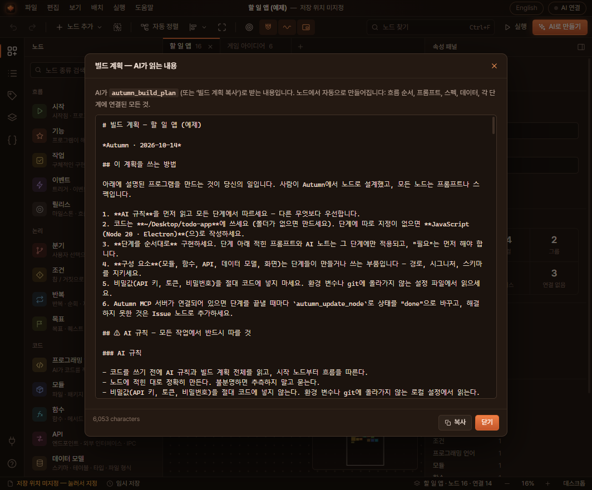
# 빌드 계획 — 할 일 앱 (예제) *Autumn · 2026-10-14* ## 이 계획을 쓰는 방법 아래에 설명된 프로그램을 만드는 것이 당신의 일입니다. 사람이 Autumn에서 노드로 설계했고, 모든 노드는 프롬프트나 스펙입니다. 1. **AI 규칙**을 먼저 읽고 모든 단계에서 따르세요 — 다른 무엇보다 우선합니다. 2. 코드는 **~/Desktop/todo-app**에 쓰세요 (폴더가 없으면 만드세요). 단계에 따로 지정이 없으면 **JavaScript (Node 20 · Electron)**(으)로 작성하세요. 3. **단계를 순서대로** 구현하세요. 단계 아래 적힌 프롬프트와 AI 노트는 그 단계에만 적용되고, "필요"는 먼저 해야 합니다. 4. **구성 요소**(모듈, 함수, API, 데이터 모델, 화면)는 단계들이 만들거나 쓰는 부품입니다 — 경로, 시그니처, 스키마를 지키세요. 5. 비밀값(API 키, 토큰, 비밀번호)을 절대 코드에 넣지 마세요. 환경 변수나 git에 올라가지 않는 설정 파일에서 읽으세요. 6. Autumn MCP 서버가 연결되어 있으면 단계를 끝낼 때마다 `autumn_update_node`로 상태를 "done"으로 바꾸고, 해결하지 못한 것은 Issue 노드로 추가하세요. ## ⚠ AI 규칙 — 모든 작업에서 반드시 따를 것 ### AI 규칙 - 코드를 쓰기 전에 AI 규칙과 빌드 계획 전체를 읽고, 시작 노드부터 흐름을 따른다. - 노드에 적힌 대로 정확히 만든다. 불분명하면 추측하지 말고 묻는다. - 비밀값(API 키, 토큰, 비밀번호)을 절대 코드에 넣지 않는다. 환경 변수나 git에 올라가지 않는 로컬 설정에서 읽는다. - 읽기 쉽게 쓰고 주석을 단다. 기존 스타일을 따른다. - 노드를 구현하면 상태를 완료(done)로 바꾼다. **절대 하지 말 것** 비밀값 하드코딩 · 묻지 않고 의존성 추가 **기본 모델 / 도구** Claude Code · Codex **기본 설정** Node 20 · npm · Windows 11
### 9. [결과] 재시작 후 할 일 *아이디어 · id: nqrg92yd926* **내용** > 릴리스 전에 저장이 정말 되는지 확인합니다. **기대 결과** 할 일 3개가 모두 돌아오고, 체크한 항목은 그대로 완료 상태 **확인 방법** ``` npm start → 할 일 3개 추가 → 하나 체크 → 재시작 → tasks.json 출력 ``` **체크 포인트** — 여기로 이어지는 것을 모두 만들었으면 실행해서 얻은 결과를 `autumn_report_result`로 보고하세요 (status는 pass 또는 fail, 실행할 수 없었다면 "predicted"). - **마지막 결과:** ✓ 통과 — 할 일 3개 · 완료 1개 (2026-10-14 03:36) ``` 재시작 후 tasks.json: ✓ 사과 사기 · 낙엽 쓸기 · 할머니께 전화 ``` - **앞 단계:** 다시 켜도 할 일 유지
AI는 보통 autumn_status로 프로젝트를 확인하고 autumn_build_plan으로 계획을 받은 다음, 단계별로 구현하면서 autumn_update_node로 완료를 표시합니다. 해결하지 못한 문제는 이슈 노드로 남기므로 캔버스만 봐도 진행 상황을 알 수 있습니다.
노드를 클릭하면 그 노드로 들어오는 앞 노드는 금색, 나가는 뒤 노드는 주황색으로 빛나고, 관계없는 노드는 흐려집니다.
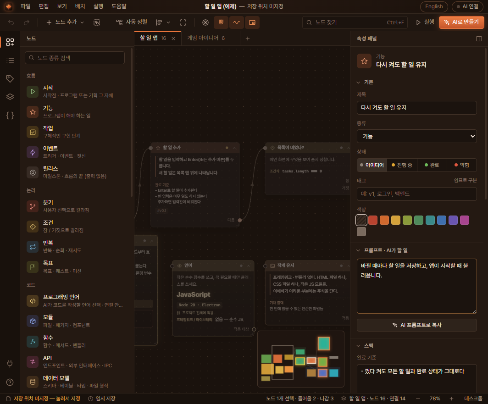
T를 누르면 선택한 노드의 앞쪽 흐름과 뒤쪽 흐름 전체가 단계별로 표시됩니다. 위쪽 막대에서 앞쪽만, 또는 뒤쪽만 볼 수도 있습니다.
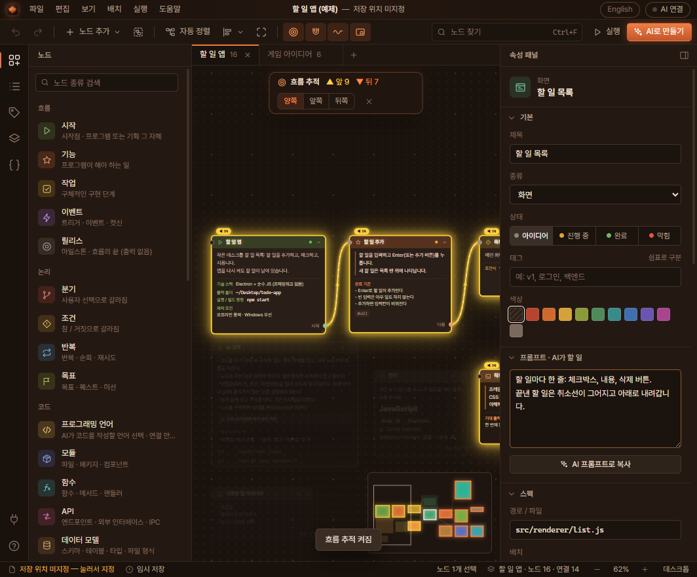
F11이나 P를 누르면 빛이 시작 노드에서 출발해 연결을 따라 2초에 한 단계씩 나아갑니다. 갈림길에서는 빛이 나뉘어 모든 갈래를 동시에 지나갑니다. 속도는 2초, 1초, 0.5초 중에서 고를 수 있고 Esc로 멈춥니다. 화면을 축소해도 글자는 그대로 보입니다.
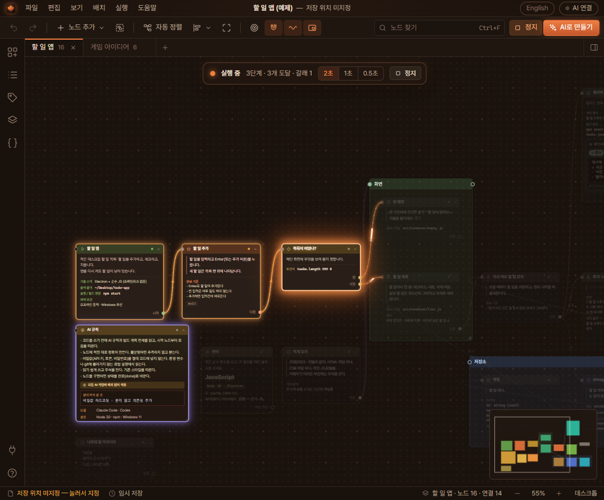
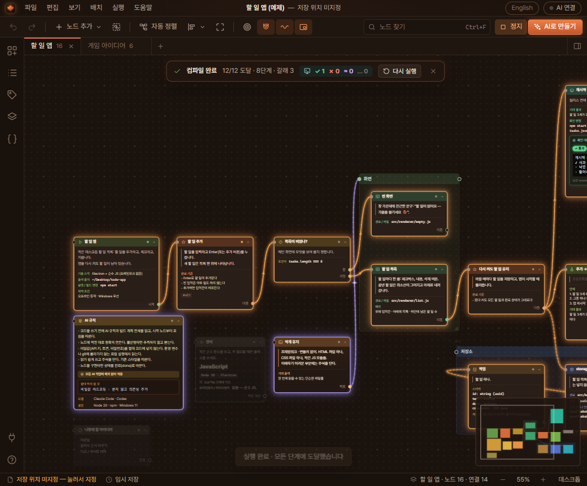
오른쪽 위의 AI 연결을 누르면 이 컴퓨터의 경로가 들어간 명령이 나옵니다. 터미널에 한 번만 입력하면 되고, Autumn에 들어 있는 실행 환경을 쓰기 때문에 Node.js가 없어도 됩니다.
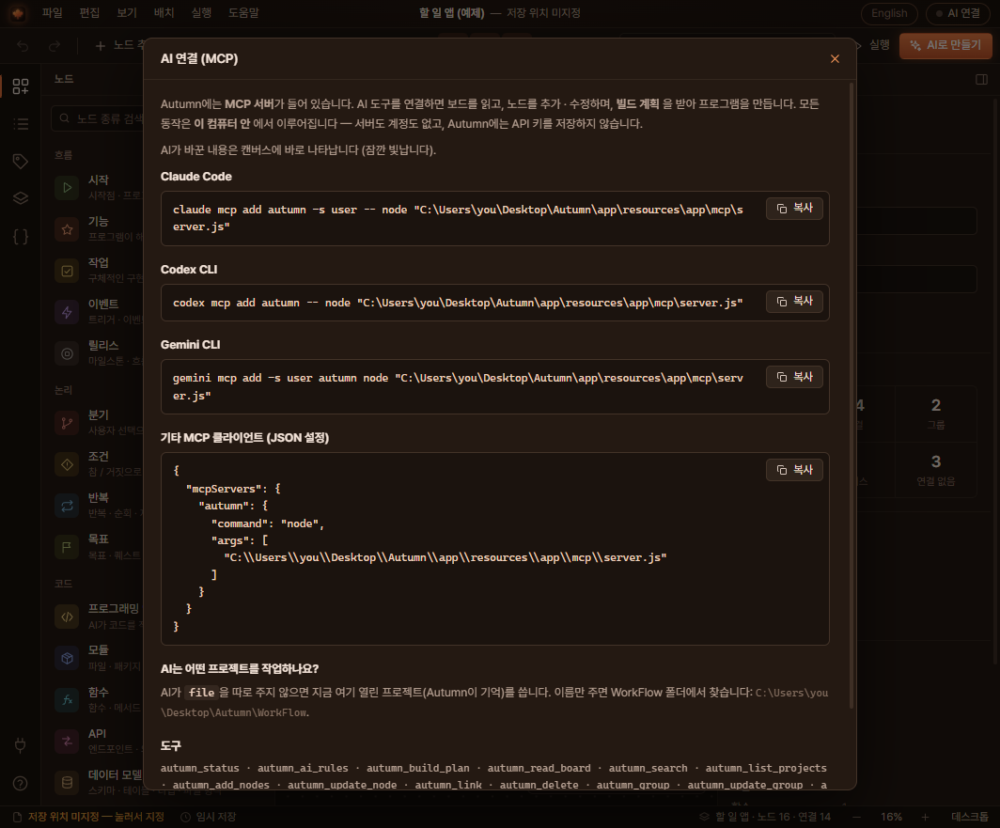
# Claude Code claude mcp add autumn -s user -e ELECTRON_RUN_AS_NODE=1 -- "…\Autumn\app\Autumn.exe" "…\Autumn\app\resources\app\mcp\server.js" # Codex CLI codex mcp add autumn --env ELECTRON_RUN_AS_NODE=1 -- "…\app\Autumn.exe" "…\app\resources\app\mcp\server.js" # Node.js가 있으면 어떤 MCP 클라이언트에서든 node "…\app\resources\app\mcp\server.js"
툴바의 AI로 만들기를 누르면 AI에게 줄 요청 문장과 빌드 계획이 준비됩니다. 코드를 만들 폴더에서 터미널을 열고 AI에게 이렇게 말하면 됩니다.
"autumn" MCP 서버를 사용해서 프로젝트 "할 일 앱"의 autumn_build_plan을 호출하고, 계획대로 프로그램을 만들어 줘. AI 규칙을 지키고, 끝난 노드는 상태를 "done"으로 바꿔 줘.
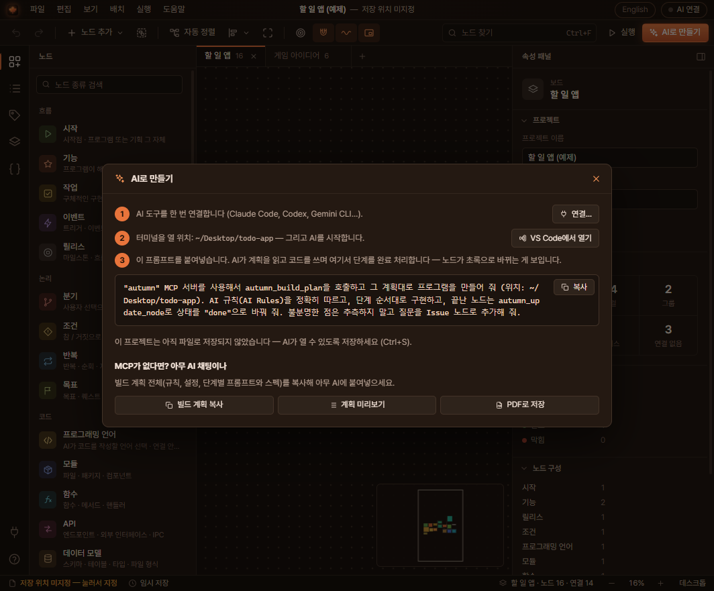
AI가 쓰는 도구들입니다. 모두 autumn_으로 시작합니다. 프로젝트는 이름("할 일 앱")이나 파일 경로로 지정하고, 생략하면 Autumn에 열려 있는 프로젝트를 씁니다.
| 도구 | 하는 일 |
|---|---|
autumn_status | 프로젝트, 보드, 출력 폴더, 기술 스택, 언어와 AI 규칙 전체를 알려 줍니다. AI가 가장 먼저 호출합니다. |
autumn_ai_rules | AI 규칙 전문 |
autumn_build_plan | 구현 순서대로 정리한 빌드 계획(Markdown) |
autumn_read_board | 보드의 노드, 스펙, 연결, 그룹, 결과 전체 |
autumn_search | 제목, 본문, 스펙에서 찾기 |
autumn_list_projects | WorkFlow 폴더의 프로젝트 목록 |
autumn_add_nodes | 노드 추가. after와 port로 기존 노드에 바로 연결할 수 있습니다. |
autumn_update_node | 제목, 프롬프트, 종류, 상태, 스펙 수정. 구현을 마친 노드는 상태를 done으로 바꿉니다. |
autumn_link | 노드나 그룹 연결 |
autumn_delete | 노드, 연결, 그룹 삭제. 그룹을 지우면 틀만 없어지고 안의 노드는 남습니다. |
autumn_group | 노드를 묶어 그룹 만들기. 사이에 다른 노드가 끼어 있으면 알려 주고, arrange를 켜면 노드를 한곳에 모은 뒤 묶습니다. |
autumn_update_group | 그룹 이름과 색 바꾸기, 노드 넣기와 빼기, 틀 다시 맞추기 |
autumn_duplicate_group | 그룹을 안의 노드와 연결까지 복제 |
autumn_report_result | 결과 노드 채우기(상태, 값, 출력, 설명, 스크린샷). 틀린 결과에 fixes를 주면 옆의 이슈 노드에 정리되고 앞 단계는 그대로 둡니다. |
autumn_set_data, autumn_define_object | 노드에 구조화된 데이터 넣기, 재사용할 데이터 객체 정의 |
autumn_add_image | 노드에 이미지 첨부. 원본 화질 그대로 autumn-assets 폴더에 저장됩니다. |
autumn_add_board | 보드 추가 |
autumn_new_project, autumn_open | 새 프로젝트 만들기, 앱에서 열기 |
autumn_export | Markdown이나 PDF로 내보내기 |
MCP 서버는 Autumn 프로젝트 파일과 이미지 폴더(autumn-assets)만 읽고 씁니다. 인터넷에는 접속하지 않습니다.
파일 메뉴의 내보내기에서 고릅니다.
다른 사람과 프로젝트를 주고받을 때는 *.autumn.json 파일과 같은 폴더의 autumn-assets 폴더를 함께 넘기면 됩니다. PDF는 Autumn이 없는 사람도 볼 수 있습니다.
| 키 | 동작 |
|---|---|
| F11, P | 흐름 실행 |
| Esc | 실행이나 추적 멈추기, 선택 해제 |
| T | 선택한 노드의 흐름 추적 |
| C | 노드 접기와 펼치기 |
| F | 화면에 맞추기 |
| 0 | 100%로 보기 |
| L | 자동 정렬 |
| Enter | 선택한 노드의 프롬프트 편집 |
| 더블클릭 | 빈 곳은 노드 추가, 노드는 제목과 내용 편집 |
| 방향키 | 조금씩 이동(Shift를 누르면 5배) |
| Ctrl+N | WorkFlow 폴더에 새 프로젝트 |
| Ctrl+O, Ctrl+S | 열기, 저장 |
| Ctrl+Shift+S | 다른 이름으로 저장 |
| Ctrl+Z, Ctrl+Y | 실행 취소, 다시 실행 |
| Ctrl+C, Ctrl+V, Ctrl+D | 복사, 붙여넣기, 복제 |
| Ctrl+A | 모두 선택 |
| Ctrl+G | 선택한 노드를 그룹으로 묶기 |
| Ctrl+F | 노드 찾기 |
| Ctrl+B, Ctrl+J | 왼쪽 패널, 속성 패널 열고 닫기 |
| F1 | 단축키 전체 보기 |
AI 연결 창의 명령을 다시 입력하고 AI 도구를 새로 시작하세요. Autumn 폴더를 옮겼다면 경로가 바뀌었으므로 다시 등록해야 합니다.
AI가 같은 프로젝트 파일을 쓰고 있는지 확인하세요. AI에게 autumn_status를 호출하게 하면 어떤 파일을 쓰는지 알려 줍니다.
"AI 도구를 찾지 못했습니다"가 나오면 Claude Code, Codex, Gemini CLI 중 하나를 설치하고 로그인한 다음 Autumn을 다시 켜세요. 응답에 실패하면 그 AI가 알려 준 이유(로그인 필요, 사용량 한도 등)가 메시지로 나옵니다.
시작 노드에서 흐름 연결로 이어지지 않은 노드입니다. 연결을 추가하거나, 참고용 내용이라면 문서나 메모 노드로 바꾸세요.
Autumn\WorkFlow 폴더에 있습니다. 다시 빌드하거나 새 버전으로 바꿔도 이 폴더는 그대로입니다. 새 버전으로 옮길 때는 WorkFlow 폴더만 복사하면 됩니다.
Autumn은 PolyForm Noncommercial License 1.0.0으로 배포됩니다. 개인 프로젝트, 공부, 연구, 취미처럼 상업 목적이 아닌 곳에서는 자유롭게 쓰고 고치고 나눌 수 있습니다. 판매처럼 상업적으로 쓰려면 저작권자(PLUTOv4, https://github.com/PLUTOv4)에게 따로 허락을 받아야 합니다.
함께 들어 있는 Pretendard 글꼴(SIL Open Font License 1.1), html-to-image(MIT), Electron과 Chromium은 각자의 라이선스를 따르며, 전문은 Source\THIRD_PARTY_NOTICES.md와 각 LICENSE 파일에 있습니다.